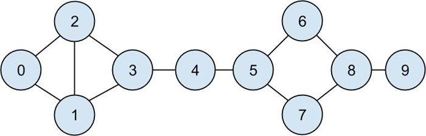
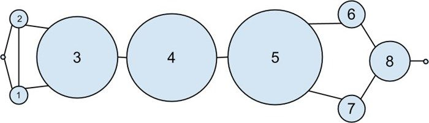
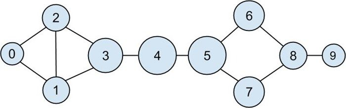

一般来说，中心度的数值本身并不具有多大意义。我们关心的是每个节点的中心度数值与其他节点的相对大小。
一般来说，中心度的数值本身并不具有多大意义。我们关心的是每个节点的中心度数值与其他节点的相对大小。21.1 中介中心度
在第 1 章中，我们只能通过每位用户的好友数量来计算 DataSciencester 网络中的关键联系人。现在，我们已经有足够多的手段来寻找其他的计算方法了。下面，我们先来看看网络中的用户，具体如图 21-1 所示：
users = [
{ "id": 0, "name": "Hero" },
{ "id": 1, "name": "Dunn" },
{ "id": 2, "name": "Sue" },
{ "id": 3, "name": "Chi" },
{ "id": 4, "name": "Thor" },
{ "id": 5, "name": "Clive" },
{ "id": 6, "name": "Hicks" },
{ "id": 7, "name": "Devin" },
{ "id": 8, "name": "Kate" },
{ "id": 9, "name": "Klein" }
]
以及用户之间的好友关系：
friendships = [(0, 1), (0, 2), (1, 2), (1, 3), (2, 3), (3, 4), (4, 5), (5, 6), (5, 7), (6, 8), (7, 8), (8, 9)]

图 21-1：DataSciencester 网络
此外，我们还给每个用户的 dict 结构添加了相应的朋友列表：
for user in users:
user["friends"] = []
for i, j in friendships:
# 这能奏效是因为users[i]是id为i的用户
users[i]["friends"].append(users[j]) # 添加i作为j的朋友
users[j]["friends"].append(users[i]) # 添加j作为i的朋友
当时，我们对度中心性 （degree centrality）的概念不甚满意，因为它与网络中直观展现在我们面前的关键联系人不甚相符。
另一种度量指标是中介中心度 （betweenness centrality），它可以用来找出经常位于其他节点对之间的最短路径中的人。具体而言，中介中心度可以通过累加节点 j 和节点 k 之间经过节点 i 的最短路径所占比例，以及节点 j 和 k 之外所有的节点对中相应的比例来求出。
也就是说，如果我们想计算出 Thor 的中介中心度，首先要计算 Thor 之外的所有用户对之间的最短路径，然后再统计有多少条最短路径通过了 Thor 这个节点。比如说，Chi（id 为 3) 和 Clive（id 为 5) 之间唯一的最短路径经过了 Thor 这个节点，而 Hero（id 为 0) 和 Chi（id 为 3) 之间的两条最短路径则都没有经过 Thor。
因此，作为第一步，我们需要找出所有用户对之间的最短路径。不过，尽管存在许多可以高效计算最短路径的尖端算法，但是按照我们的惯例，这里将采用效率虽低一些但更加容易理解的算法。
这个算法（一个广度优先搜索的实现）在本书中算是比较复杂的一种，所以我们仔细探讨。
1. 我们的目标是建立一个以 from_user 为输入的函数，它能够找出到达其他每个用户的所有最短路径。
2. 我们将通过用户 ID 组成的列表来表示路径。由于每条路径的第一个节点总是 from_user ，因此我们可以在这个列表中将该 ID 忽略。也就是说，这个代表路径的列表的长度等于该路径本身的长度。
3. 我们将维护一个名为 shortest_paths_to 的字典，其键为用户 ID，其值为以该用户 ID 结尾的路径构成的列表。如果最短路径是唯一的，那么这个列表就只包含一个路径。如果有多条最短路径的话，那么该列表将包含所有这些路径。
4. 我们还将维护一个名为 frontier 的队列来存放那些待考察的用户，并且它们的存放顺序就是相应的考察顺序。我们将以用户对的形式——即 (prev_user, user) ——来进行存储，这样就能了解我们是如何到达每一个用户的。这个队列是通过 from_user 的所有相邻节点进行初始化的。（当然，我们之前从没有讨论过队列，其实它是专门为“在后端进行插入”操作和“在前端进行删除”操作经过优化的数据结构。在 Python 语言中，队列是由 collections.deque 模块来实现的，实际上它是一种双向队列。）
5. 当我们在图中进行探索的时候，每当发现新的邻居节点，只要还不知道通向它们的最短路径，就将它们添加到队尾以供将来进一步探索，并且以当前用户作为其 prev_user 。
6. 当我们把一个用户从队列中删除时，如果之前从未遇到过该用户，那么我们肯定是找到了一个或多个通向它的最短路径：沿着到达 prev_user 的每个最短路径再走一步即是。
7. 当我们从队列中删除一个之前遇到过的用户时，我们不是找到了另一个最短路径（这种情况下我们应该将其添加到队尾），就是找到了一个更长的路径（这种情况下不用将其插入队尾）。
8. 当队列中已经没有用户时，说明我们已经搜遍了整个图（或者至少也是起始用户所能够达到的部分），这时我们就可以停止了。
我们可以将这些步骤放入一个（大型）函数中，代码如下所示：
from collections import deque
def shortest_paths_from(from_user):
# 一个由"user_id"到该用户所有最短路径的字典
shortest_paths_to = { from_user["id"] : [[]] }
# 我们需要检查的(previous user, next user)队列
# 从所有(from_user, friend_of_from_user)对开始着手
frontier = deque((from_user, friend)
for friend in from_user["friends"])
# 直到队列为空为止
while frontier:
prev_user, user = frontier.popleft() # 删除该用户
user_id = user["id"] # 即队列中的第一个用户
# 若要向队列添加内容
# 我们必须知道通向prev_user的某些最短路径
paths_to_prev_user = shortest_paths_to[prev_user["id"]]
new_paths_to_user = [path + [user_id] for path in paths_to_prev_user]
# 我们可能已经知道了一条最短路径
old_paths_to_user = shortest_paths_to.get(user_id, [])
# 到目前为止，我们看到的到达这里的最短路径有多长？
if old_paths_to_user:
min_path_length = len(old_paths_to_user[0])
else:
min_path_length = float('inf')
# 只留下那些刚找到的不太长的路径
new_paths_to_user = [path
or path in new_paths_to_user
f len(path) <= min_path_length
nd path not in old_paths_to_user]
shortest_paths_to[user_id] = old_paths_to_user + new_paths_to_user
# 将这些从未谋面的"邻居"添加到frontier中
frontier.extend((user, friend)
for friend in user["friends"]
if friend["id"] not in shortest_paths_to)
return shortest_paths_to
现在我们可以将这些 dict 存放到各个节点中了：
for user in users:
user["shortest_paths"] = shortest_paths_from(user)
好了，现在终于可以计算中介中心度了。对于任意一对节点 i 和 j ，我们都知道从 i 到 j 有 n 条最短路径。然后，对应于每一条这样的最短路径，我们只要给该路径中的每个节点的中心度加 1/n 即可：
for user in users:
user["betweenness_centrality"] = 0.0
for source in users:
source_id = source["id"]
for target_id, paths in source["shortest_paths"].iteritems():
if source_id < target_id: # 不要加倍计数
num_paths = len(paths) # 有多少最短路径
contrib = 1 / num_paths # 中心度加1/n
for path in paths:
for id in path:
if id not in [source_id, target_id]:
users[id]["betweenness_centrality"] += contrib

图 21-2：根据中介中心度的大小绘制的 DataSciencester 网络
如图 21-2 所示，用户 0 和 9 的中心度为 0（因为它们不在其他用户之间的任何一条最短路径上），而用户 3、4 和 5 则都具有较高的中心度（因为它们都位于多条最短路径上）。
此外，还有一个需要关注的衡量指标，即所谓的接近中心度 （closeness centrality）。首先，为每个用户计算其疏远度 （farness），即该用户到所有其他用户的最短路径的长度总和。
由于我们已经计算出每一对节点之间的最短路径，因此，只要对其求和即可。（如果有多个最短路径，并且都具有相同的长度，那么我们只考察第一个即可。）
def farness(user):
"""the sum of the lengths of the shortest paths to each other user"""
return sum(len(paths[0])
for paths in user["shortest_paths"].values())
这样一来，接近中心度的计算量就很小了（见图 21-3）：
for user in users:
user["closeness_centrality"] = 1 / farness(user)

图 21-3：根据接近中心度绘制的 DataSciencester 网络
我们看到，尽管非常靠近中心的节点离外围节点很远，但是图中各节点在大小上面差别不是很大。
正如我们所看到的那样，计算最短路径是一件苦差事。因此，中介中心度和接近中心度很少用于大型网络。还有一种不太直观的特征向量中心度 （eigenvector centrality），由于计算起来更容易，所以更加常用。